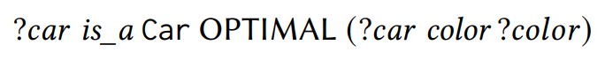
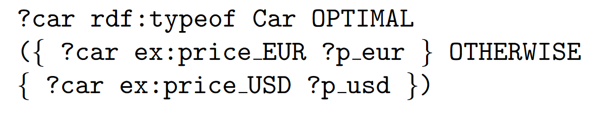

OptiSparql
(Interdependent) Preferences for easier control over query answers from incomplete knowledge graphsTill Affeldt - Stephan Mennicke - Wolf-Tilo Balke
Knowledge Graphs
- mix data from various sources
- model similar things differently
- often have missing information
What modeling techniques do we have?
Built-in Operators
- complex FILTER methods
🙅 I want a red cabriolet or no car at all!
🤔 I want a red car... Or maybe a cabriolet..?
🤷 I want a red car!
Also, does it happen to be a cabriolet?
FILTER Constraints
🤯 I can tell you what I want!...right after reading out your entire catalogue
What do we have?
(with extensions)
Related Work
- Previous knowledge from relational databases
- Fuzzy FILTER logic (f-SPARQL)
- Frameworks for value preferences (PrefSPARQL, SPREFQL)
What is a structural preference?
Value Preferences
😊 I prefer red cabriolets
Structural Preferences
😵 I prefer cars with price information
What would that look like?
One simple operator
Left associative

Simultaneous

Why does that not suffice?
Interdependencies
🤵 I prefer the color red but only when it comes to sports cars.
Structural Dependencies
I prefer cars with information about the manufacturer and the manufacturer's form of company.
What did we change?
Our Revision
- new operators THEN and OTHERWISE
- model dependencies explicitly
- clearer and more concise
THEN

🤵 I prefer the color red but only when it comes to sports cars.
OTHERWISE
👨✈️ I prefer a price in Euros. Otherwise, Dollars will suffice.
What else is left to discuss?
Future Topics
- Complexity & expressive power
- In depth performance analysis
- Specialized evaluation runtimes
Roundup
- Intuitive modeling with preferences
- Structural preferences for handling incompleteness
- New operators for modeling queries
- More complex models with additional operators